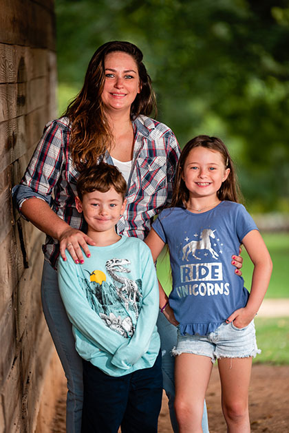
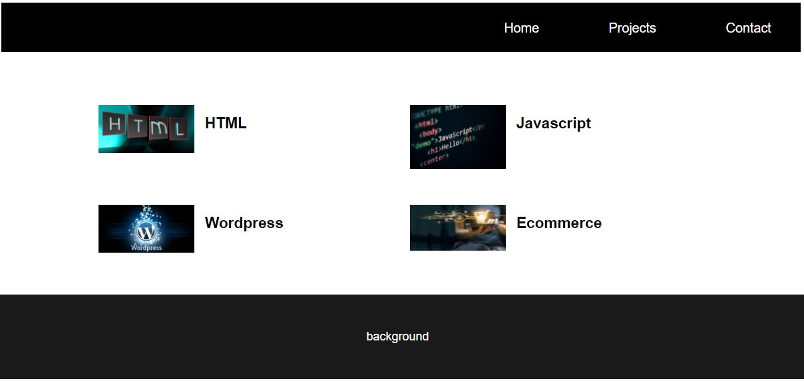
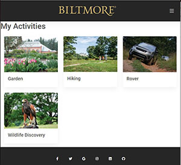
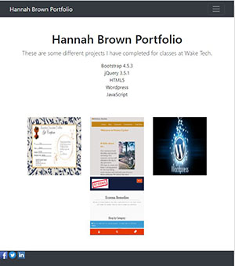
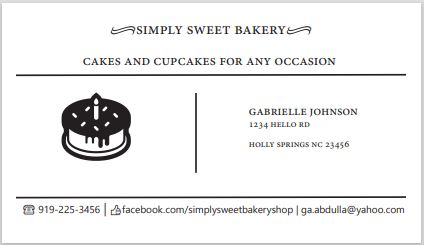
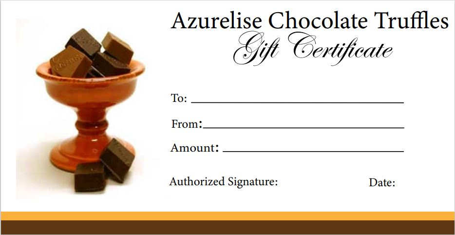
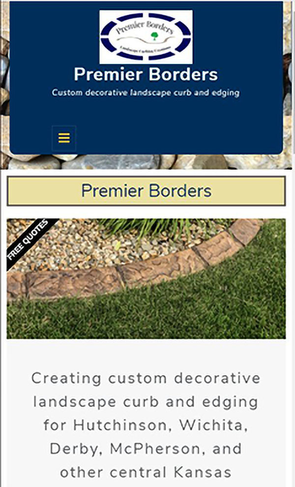
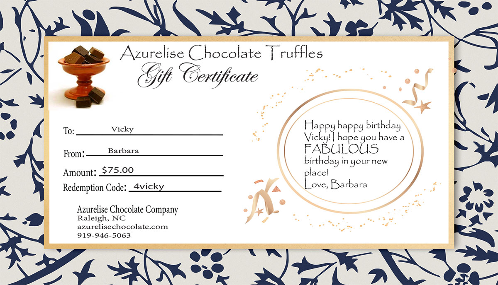

A little about me...

Hi! This is a little about me, my name is Hannah Brown. I am a student at Wake Tech currently taking classes to obtain my associates in Information Technology, Web Development. I decided to switch careers from Law Enforcement to Web Development in the Fall of 2019! I made the switch to have a better schedule that will allow me to spend more time with my kids. The career switch was a hard decision to make since I loved serving my community. Problem solving and helping other people reach their goals are two things I love to do. I am fortunate to say Web development has made it possible for me to continue to do both. I fell in love with making websites for local businesses. One of my first freelance web designs was for a local business, Premier Borders, out of Wichita, KS. I previously served with the owner on the same department and when he left to start his own business he reached out for help designing his website via WordPress. I am currently finishing up my associates degree and will be finished in the Spring of 2022. During the summer of 2021 I will be taking a Coding Bootcamp at UNC Chapel Hill along with classes at Wake Tech
I have experience using:
- HTML
- CSS
- Bootstrap
- JavaScript
- WordPress
- Python
- Adobe
I would love to help you accomplish your business goals by providing services in Web and Graphic Design.
-

First Portfolio
This was my first attempt at a portfolio. The design was built using bootstrap.
-

Ficticious Biltmoore Companion App
I design a ficticious companion app for a person that is visiting the Biltmoore. This was for a class through Wake Tech.
-

Redo of Portfolio
I used bootstrap to create the design for this version of my portfolio.
Do you need help designing gift certificates or business cards?
- 
- 
Freelance Web Design
Premier Borders is a curb and edging small business based out of Wichita, KS. I designed this website using WordPress. I collaborated with the owner of the business to build this according to his busniess goals. He wanted to target residental clients within Wichita and the surrounding cities.
You can click this link to view the site. Premier Borders
Freelance Graphic Design Project
I designed a gift certificate for a local chocolate company based out of Raleigh, NC. The first one was personalized and the second one is a generic gift cert for the business.